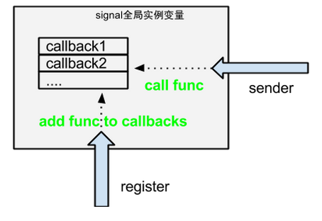

django¶
中间件¶
django 自带了一下中间件:
django.contrib.sessions.middleware.SessionMiddleware
django.middleware.common.CommonMiddleware:
自动补全/
UA forbidden
etags
django.middleware.gzip.GZipMiddleware:
使用gzip对response.content进行压缩
django.contrib.auth.middleware.AuthenticationMiddleware:
提供了app(auth), 其中包括url (login, logout, password_change)
session¶
配置¶
使用django session 需要在middle中配置: django.contrib.sessions.middleware.SessionMiddleware
这个中间件的作用是:
在request之前，给request对象增加一个session属性，是sessionStore类型(这个类型可以在setting中用SESSION_ENGINE来配置)
在response之后，查看response的status, 如果不等于500， 就把session对象存储下来(看SESSION_ENGINE来决定用什么存)
| 配置 | 作用 |
|---|---|
| SESSION_COOKIE_NAME | sessionid 默认的session字段名 |
| SESSION_CACHE_ALIAS | default session 使用cache时，用哪个cache配置 |
| SESSION_COOKIE_AGE | |
| SESSION_COOKIE_DOMAIN | None http协议里session 的domain字段。 允许跨域session |
| SESSION_COOKIE_HTTPONLY | |
| SESSION_COOKIE_PATH | |
| SESSION_COOKIE_SECURE | |
| SESSION_ENGINE | django.contrib.sessions.backends.db django自带以下engine: django.contrib.sessions.backends.db: 用mysql实现的session django.contrib.sessions.backends.file: 用file django.contrib.sessions.backends.cache: 用mem, 不持久 django.contrib.sessions.backends.cached_db: 用mem + mysql |
| SESSION_EXPIRE_AT_BROWSER_CLOSE | |
| SESSION_FILE_PATH | file session 使用保存session的路径 |
| SESSION_SAVE_EVERY_REQUEST | False 是否每个请求都store一遍session, 默认只有session改变的时候才store |
| SESSION_SERIALIZER |
cache¶
默认django自带的session cached engine, 都是使用django.core.cache的功能来实现cache
清理¶
session 会每次生成一条记录， 用 clearsessions 可以清理过期的session. 可以把这条命令加在crontab里
测试¶
测试类
django.utils.unittest.TestCase 基本测试类
django.test.TransactionTestCase 事务测试类:
每个test_函数执行过后，都会恢复数据库到初始状态。
django.test.LiveServerTestCase 活服务测试类:
每次测试的时候，会在后台模拟启动一个服务端(python manager.py runserver), 这就可以用 Selenium 来自动化测试
优化¶
- 如果不使用django的session, 那么在settings里把session的中间件注掉，减少开销
- 可以使用其他模板引擎， 如jinja2, 但要注意， django的contrib里的app, 都是用DTL实现的
其他¶
信号¶
django 的信号，其实就是定义一个全局类， 这个类的作用就是观察者， 可以注册 一堆callback, 最后通过send()方法来调用每个signal 上的callback. 它的作用就是解藕, 无其他作用
第一步, 注册 signal, 这步建议把代码写在每个app下的signal.py 文件中:
import django.dispatch
delete_done = django.dispatch.Signal(providing_args=['obj'])
第二步, 关联对应的listener, 建议把这行代码写在 models.py 中:
class Article:
pass
def callback(sender, **kwargs):
pass
signals.delete_done.connect(callback, sender=Article)
第三步, 触发信号:
signals.delete_done.send(sender=Article, obj=self)
$ pip install -U mongoengine
sitemap¶
django 有sitemap模块，可以让你用类的方式，自动生成sitemap.xml, 供search engine 使用
问题¶
有些django版本，创建了新app并写了models后，无法migrate来创建数据库，提示已migrated. 这种情况下， 在新app目录下，删除掉 migrations目录即可